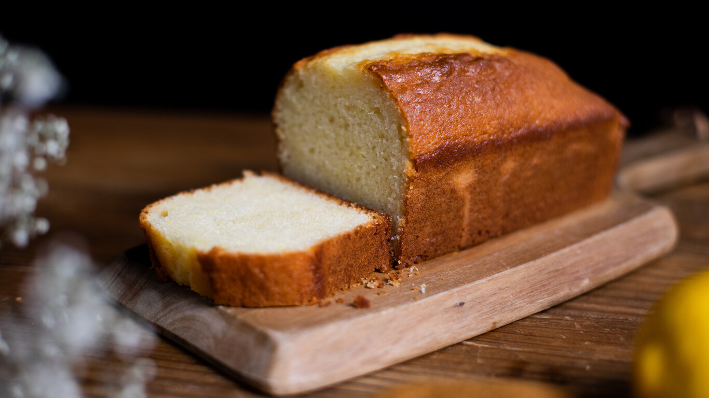

Bizcocho

Bizcocho de yogur casero y esponjoso
El bizcocho de yogur es una de las recetas más sencillas que podemos encontrar para hacer este tradicional dulce. Con la famosa regla del 1-2-3, vamos a conseguir el bizcocho casero más esponjoso y delicioso para disfrutar en nuestros desayunos.
Ingredientes
- 1 medida de yogur de aceite suave (125 g)
- 2 medidas de yogur de azúcar blanco (240 g)
- 3 huevos M
- 1 yogur natural (125 g)
- 3 medidas de yogur de harina de trigo (180 g)
- 1 sobre de levadura química (16 g)
Elaboración
- Mezclamos el aceite y el azúcar
- Añadimos los huevos uno a uno
- Agregamos el yogur
- Tamizamos la harina y la levadura química
- Precalentamos el horno a 180 ºC con calor arriba y abajo, y engrasamos y forramos el molde
- Horneamos durante 50 minutos
- Dejamos reposar sobre una rejilla 15 minuto
- Desmoldamos el bizcocho de yogur y lo dejamos enfriar
Volver a página principal